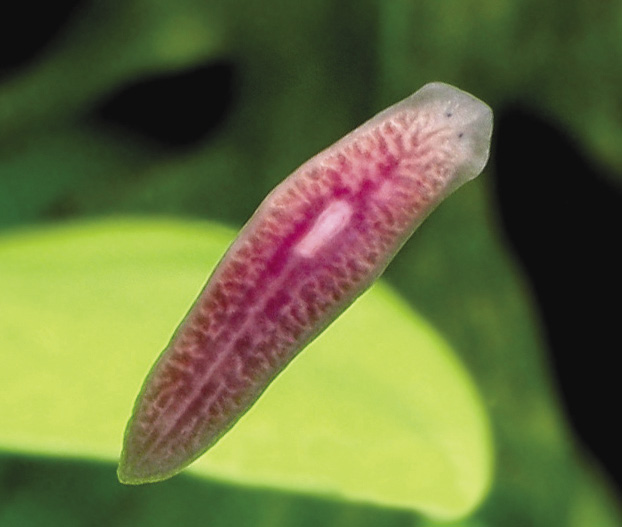
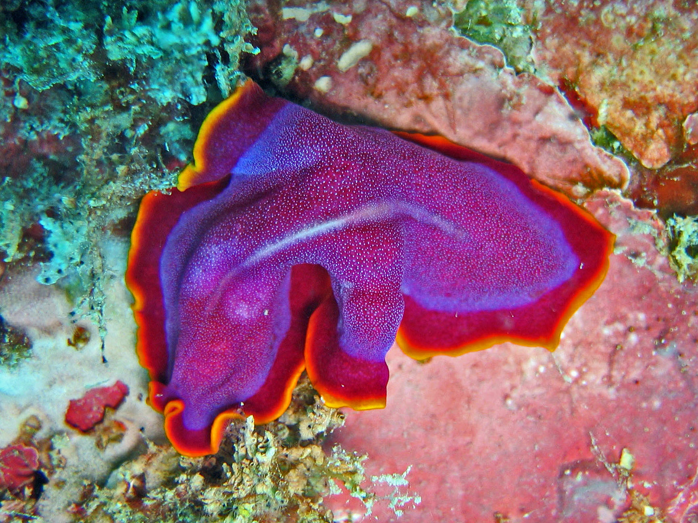

Introdução
Os platelmintos são um filo de animais invertebrados que inclui cerca de 20.000 espécies. Eles são conhecidos por serem animais de corpo achatado, o que lhes permite se mover facilmente em ambientes aquáticos ou terrestres com pouco espaço. Muitas espécies são parasitas de outros animais, incluindo humanos, e podem causar doenças graves. Alguns exemplos conhecidos de platelmintos incluem as tênias, que são parasitas intestinais, e as planárias, que são frequentemente utilizadas como modelo em estudos científicos. Apesar de sua simplicidade morfológica, os platelmintos são animais interessantes e têm um papel importante em muitos ecossistemas.
Tipos de Platelmintos
Existem mais de 25.000 espécies de platelmintos, classificados em três grupos principais:
- Os turbelários são a classe mais diversa de platelmintos e incluem cerca de 4.500 espécies de animais de corpo achatado e de vida livre. Eles são encontrados em ambientes aquáticos, como rios, lagos e mares, mas também podem ser encontrados em solos úmidos. As planárias são um exemplo de turbelário e são frequentemente usadas como modelos em estudos científicos devido à sua capacidade de regenerar partes do corpo.
- Os trematódeos, também conhecidos como "vermes flukes", são parasitas internos que afetam muitos animais, incluindo humanos. Eles têm um ciclo de vida complexo e podem ter dois ou mais hospedeiros em diferentes estágios de seu ciclo. Exemplos conhecidos de trematódeos incluem o Schistosoma, que causa a esquistossomose, uma doença parasitária comum em áreas tropicais e subtropicais.
- Os cestódeos, também conhecidos como "vermes chatos", são parasitas que geralmente vivem no intestino de seus hospedeiros. Eles têm um corpo longo e segmentado e podem crescer muito, com algumas espécies chegando a medir vários metros de comprimento. As tênias são um exemplo conhecido de cestódeo e podem infectar humanos quando a carne de animais infectados é consumida cru ou mal cozida.
.jpg)
Anatomia
Os platelmintos são animais invertebrados que possuem um corpo achatado e uma estrutura corporal simples. Eles têm uma simetria bilateral, o que significa que o corpo pode ser dividido em duas metades iguais apenas por um plano. A anatomia dos platelmintos varia de acordo com a classe a que pertencem, mas algumas características são comuns a todos. Os platelmintos possuem um sistema nervoso centralizado, com um par de gânglios cerebrais e nervos que se estendem por todo o corpo. Eles também têm uma boca, localizada na parte anterior do corpo, e um intestino com apenas uma abertura, que funciona tanto para a ingestão de alimentos quanto para a eliminação de resíduos. A maioria dos platelmintos tem um sistema excretor bem desenvolvido, que consiste em uma rede de canais ramificados que coletam os resíduos metabólicos e os eliminam através de um poro excretor localizado na superfície ventral do corpo. Os platelmintos também têm um sistema reprodutor bem desenvolvido, que varia dependendo da classe. Na classe Turbellaria, as planárias têm um sistema reprodutor hermafrodita, com órgãos sexuais masculinos e femininos em cada indivíduo. Na classe Trematoda, os vermes flukes têm sistemas reprodutores separados, com indivíduos machos e fêmeas. Na classe Cestoda, as tênias também têm sistemas reprodutores separados, com indivíduos machos e fêmeas, mas a fertilização geralmente ocorre externamente. A maioria dos platelmintos tem um sistema circulatório pouco desenvolvido ou ausente, dependendo da classe. Em vez disso, os nutrientes são distribuídos por difusão através do corpo. Alguns platelmintos parasitas têm um sistema de ventosas e ganchos que lhes permite fixar-se ao hospedeiro e se alimentar de seus tecidos.
Reprodução
A reprodução nos platelmintos pode variar dependendo da classe a que pertencem. Na classe Turbellaria, que inclui as planárias de vida livre, a maioria das espécies tem um sistema reprodutor hermafrodita, ou seja, cada indivíduo possui órgãos sexuais masculinos e femininos. A fertilização pode ocorrer de forma cruzada, onde dois indivíduos se acasalam e trocam esperma, ou de forma autogâmica, onde um único indivíduo se autofecunda. Na classe Trematoda, que inclui os vermes flukes parasitas, os indivíduos geralmente possuem sistemas reprodutores separados, com machos e fêmeas. A maioria das espécies tem uma fase larval que infecta um hospedeiro intermediário, onde ocorre a reprodução assexuada, e uma fase adulta que parasita um hospedeiro definitivo, onde ocorre a reprodução sexuada. Na classe Cestoda, que inclui as tênias parasitas, os indivíduos também possuem sistemas reprodutores separados, com machos e fêmeas. As tênias adultas vivem no intestino de seu hospedeiro definitivo, geralmente um vertebrado, e produzem grandes quantidades de ovos que são eliminados nas fezes. Os ovos podem ser ingeridos por um hospedeiro intermediário, como um porco ou uma vaca, onde eclodem e formam cisticercos, uma forma larval da tênia. Quando o hospedeiro intermediário é consumido pelo hospedeiro definitivo, a tênia se desenvolve em sua forma adulta e o ciclo se repete. Em geral, a reprodução nos platelmintos pode ocorrer de forma sexuada ou assexuada, dependendo da espécie e das condições ambientais. A capacidade de alguns platelmintos para autofecundação ou reprodução assexuada lhes confere uma grande capacidade de adaptação e sobrevivência em ambientes variáveis e imprevisíveis.
.jpg)